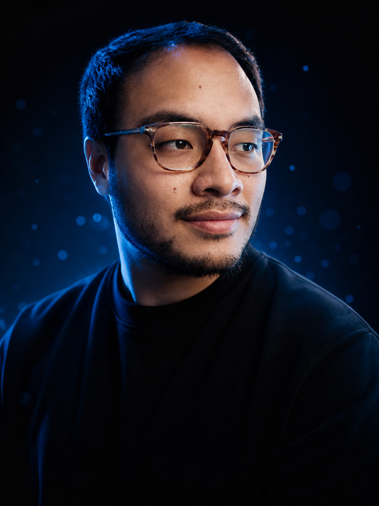

Senior .NET & Azure engineer.
Nine years shipping for US teams. Now building AI agents.
Luis Antonio Jacho Zambrano · Quito, Ecuador
Reduced release downtime ~60% with CI/CD automation. Architected Azure systems for 30,000+ users.
.NET · Angular · Azure · TypeScript · Node.js
